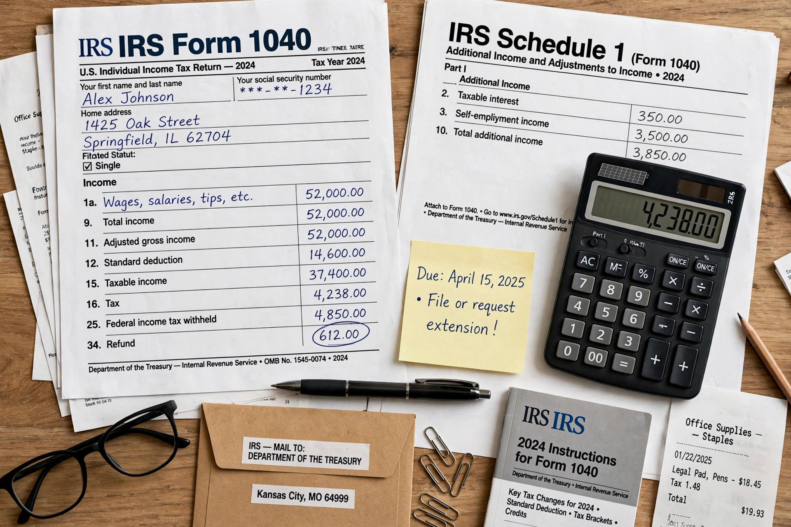

Taxes in the United States are imposed by federal, state, and local governments, and include income, payroll, property, sales, capital gains, dividends, imports, and estate and gift taxes.
Early federal revenue came mainly from tariffs and excise taxes. A Civil War income tax lapsed, the 1894 income tax was struck down, and the Sixteenth Amendment (1913) enabled the modern federal income tax administered by the IRS under the Treasury Department.
The federal income tax is progressive, with rates rising across brackets, while payroll taxes fund Social Security and Medicare. Most states also levy income taxes; a few, such as Texas and Florida, levy none on wages.
States and localities rely heavily on sales and property taxes. The United States, unusually, taxes citizens living abroad on worldwide income.